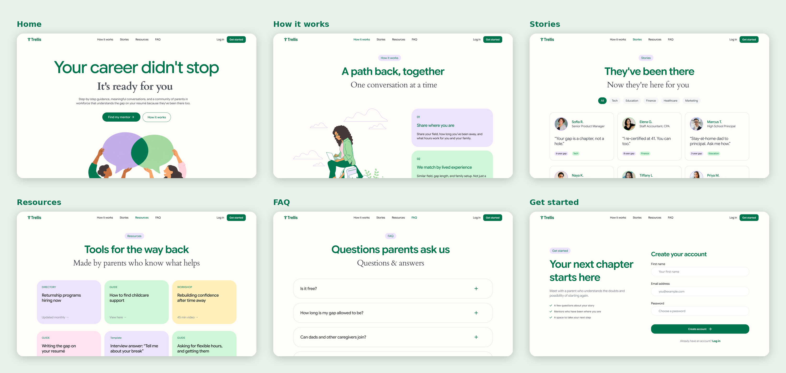
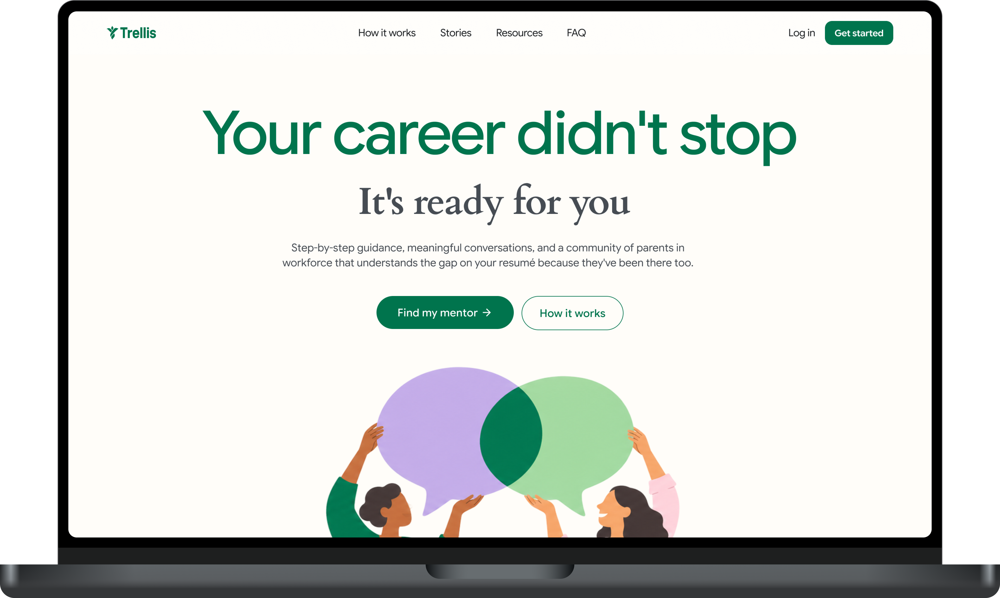

Trellis
A mentorship platform that matches parents returning to work after a career break with mentors who made the same move. I designed the first impression, the onboarding, and the dashboard, then coded designs into working prototype.
Product Designer
Front-end Prototyper
3 designers
Figma
HTML, CSS, JavaScript
2 to 3 months
Overview
Returning to work after taking time off for caregiving can feel overwhelming. Parents may be unsure how to approach their job search, communicate their skills, or find their place in a changing workforce. Trellis explores how connecting with someone who has been through a similar experience can make that transition a little easier.
A career break can cut people off from the people who would help them back in.
Plenty of parents step away from work to care for their families. Pew Research found that 39% of mothers and 24% of fathers reported taking time off for this reason. When they want to return, they often come back to a very different situation: professional networks and mentors fade, and there is a real worry about how employers will read the gap on a resume.
Support is out there, but it's often spread across different organizations and events. For parents already balancing work, caregiving, and everyday responsibilities, finding the right resources can be difficult.
of mothers reported taking time off to care for family
of fathers reported the same
Design Direction
Our research moved us from job search to mentorship
We started out thinking about how to help parents find jobs that fit their lives. Our interviews kept pointing somewhere else. Parents told us a role can match their skills and still clash with their daily schedule, and they felt unsure about how employers would see their break. What they valued most was advice from people who understood their situation.
This became our set of six design requirements. The two that shaped my screens the most were accommodate diverse return-to-work goals, because there is no single definition of a successful return, and gain clarity on career paths via mentorship.
Visual Identity
A trellis supports growth without picking the direction
That idea became our brand concept. A trellis holds a plant up but doesn't decide where it grows, which is how we wanted mentorship to feel. Parents choose their own path back to work, and the platform gives them support along the way.
We worked from a mood board built around connection, growth, and weaving, then paired a deep forest green and fresh sage with soft pastel accents to make the experience feel calm, optimistic, and welcoming.


Reusable components and interaction states across the Trellis experience.
High-Fidelity Wireframes
From onboarding questions to personalized mentor matches
I designed the onboarding around the information needed to make relevant mentor matches, including a parent's professional background, career break, and goals for mentorship. The dashboard builds on those responses by presenting three matched mentors immediately after onboarding, along with the details behind each match and a clear way to book a session.
Six pages introduce Trellis before sign-up: Home, How It Works, Stories, Resources, FAQ, and Get Started. Together, they explain the platform, show how mentorship works, and help parents decide whether Trellis is right for them.

I broke onboarding into one question per screen, covering why someone is returning to work, their professional field, career break length, current progress, and the support they're looking for. These responses help inform the mentor matching process.

The dashboard presents three recommended mentors, with one highlighted as the best match. I included the matching criteria so users can understand why each mentor was recommended, along with clear next steps to learn more and book a session.

Design Decisions
Four choices I made on the dashboard and booking flow
Our users are busy and a bit nervous about reaching out to a stranger. I tried to keep every screen light and make each step feel low-pressure.
Coding the prototype
I coded my own version of booking to see it work
I transformed my Figma designs into a fully functional website using HTML, CSS, and JavaScript, using Claude to support and speed up the development. Try out the experience by creating an account and booking a session with a mentor!

Takeaways
What I Learned
The biggest lesson was how much our research changed the product. We began with a job-search idea and ended with mentorship, and the project got much stronger once we let the interviews lead. I also learned how many small decisions go into making a first-time experience feel low-pressure, from showing why someone was matched to making every extra step optional.
Building the booking flow in code made me think about things Figma lets you skip, like what the confirmation should say for every possible day and time, and what happens when someone cancels. Next up is testing with real parents to see whether the matches actually help them feel clearer about their next step.
wanna see my other projects? explore all projects →